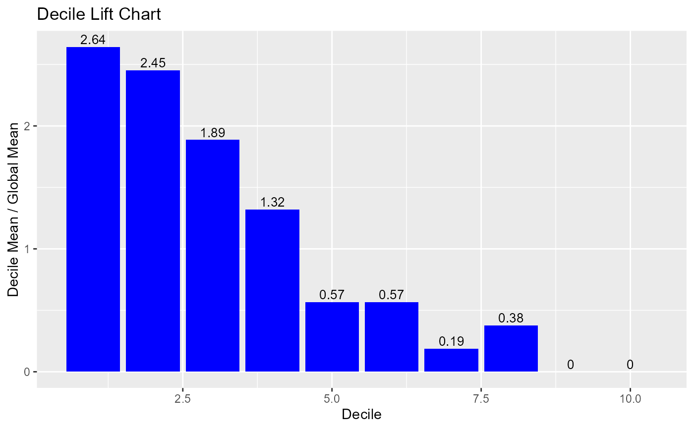

Decile wise lift chart.
Usage
blr_decile_lift_chart(
gains_table,
xaxis_title = "Decile",
yaxis_title = "Decile Mean / Global Mean",
title = "Decile Lift Chart",
bar_color = "blue",
text_size = 3.5,
text_vjust = -0.3,
print_plot = TRUE
)Arguments
- gains_table
An object of class
blr_gains_table.- xaxis_title
X axis title.
- yaxis_title
Y axis title.
- title
Plot title.
- bar_color
Color of the bars.
- text_size
Size of the bar labels.
- text_vjust
Vertical justification of the bar labels.
- print_plot
logical; if
TRUE, prints the plot else returns a plot object.
See also
Other model validation techniques:
blr_confusion_matrix(),
blr_decile_capture_rate(),
blr_gains_table(),
blr_gini_index(),
blr_ks_chart(),
blr_lorenz_curve(),
blr_roc_curve(),
blr_test_hosmer_lemeshow()
Examples
model <- glm(honcomp ~ female + read + science, data = hsb2,
family = binomial(link = 'logit'))
gt <- blr_gains_table(model)
blr_decile_lift_chart(gt)
